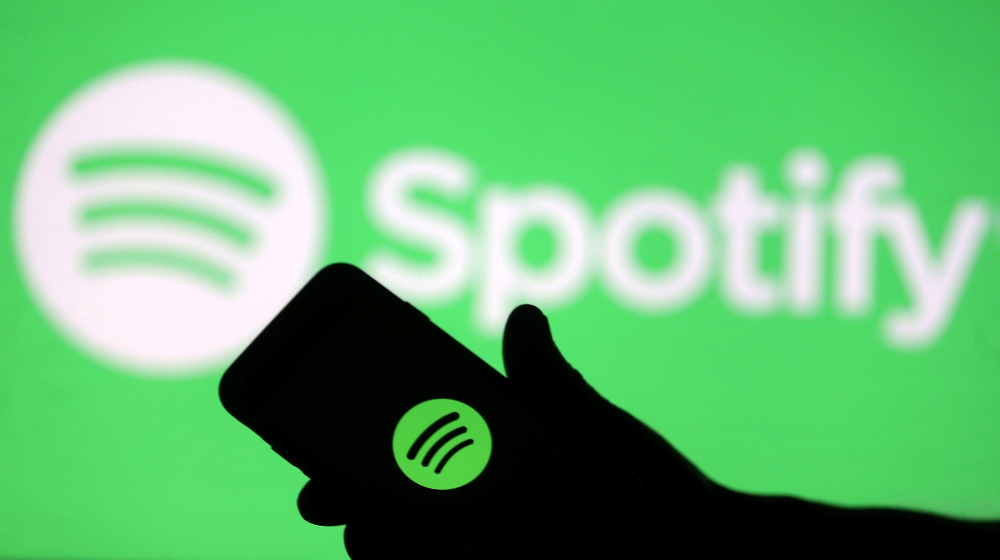

The Influence of Music Streaming Platforms
The way we listen to music has evolved tremendously in the last decade. Only a couple of years ago, we could only listen to music by either purchasing or illegally downloading songs onto our iPod Touch devices. Streaming platforms such as Spotify and Apple Music have completely changed the music industry and how it runs. This has been extremely beneficial for some people in the industry however less so for others. Streaming platforms have allowed big labels to receive a steady income which had never happened before because, in the past, revenue was solely made through music sales.
However, even though this is a big breakthrough for label companies, musicians and artists have suffered greatly from streaming platforms. The music industry now relies almost entirely on streaming and the success of an artist depends on their stream count. According to Paula Mejía in her article, “The Success Of Streaming Has Been Great For Some, But Is There A Better Way?", the system in which artists get paid is extremely flawed. In the article, she states that it is estimated that artists themselves only receive 10-15% of the money they receive per stream, however, how the rest of the money is distributed is not clarified. Streaming platforms have negatively influenced the music community because their faulty money systems and unhealthy focus on streaming numbers have deadened many artists' creativity and forced them to adjust their music to cater to the general audience. With this knowledge, how can we fix the music industry's payment system so artists can have the freedom to be as creative as they'd like?